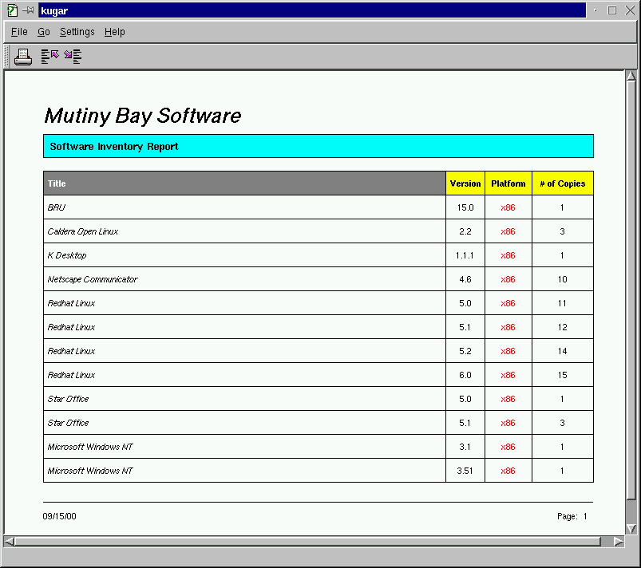

Kugar Report Viewer
Phil Thompson, phil@river-bank.demon.co.uk
Version 1.0
Description:
The kugar utility is an application that can preview and print any
Kugar report. Kugar reports can also be viewed from Konqueror.

Usage:
The kugar program takes two commandline arguments:
-d <Kugar
data file>
-r <Kugar
template file>
Example: kugar -d sample1.kud -r sample1.kut
Copyright © 2000 Mutiny Bay Software
Copyright © 2000 Phil Thompson